摘要 以 100 檔跨資產 ETF（2006–2025，Yahoo Finance）建立月頻、只做多的排名策略：機制是「資金移動緩慢、投資人反應不足」造成 6–12 個月相對強弱延續，並假設高波動期間（動能崩潰）會讓這個效果失效。我依 ML4T 流程完成一圈：先寫好
setup.yaml與驗證協定並封存 2024–2025 holdout → 時間點正確的資料管線 → 22 個候選特徵、五道關卡篩選（0 PROCEED／9 REVISE／8 STOP）→ 規則／Ridge／LightGBM 階梯 → 含成本、配置與風控的回測 → holdout 前的洩漏檢查 → 只跑一次 holdout。部署模型（LightGBM）在驗證期日 IC 0.078 [0.042, 0.113]、淨 Sharpe 0.63 [−0.02, 1.29]；holdout 日 IC 0.064 [−0.014, 0.142]、淨 Sharpe 1.08 [−0.31, 2.47]，預先登錄的確認檢定通過，但兩個信賴區間都含 0，且在 holdout 中 ML 的優勢沒有轉成投組優勢（Sharpe 低於 12-1 規則的 1.35 與 60/40 的 1.39）。Deflated Sharpe（N = 93 次試驗）只有 0.28（驗證）與 0.17（holdout）。結論：依 Ch. 20 屬於「never resolved」型態（兩段淨 Sharpe 區間皆含 0）；訊號方向維持，但價值在投組轉換關卡流失。另外，稽核後以重新下載的資料（調整因子僅差約 10⁻⁶）重跑開發期，Optuna 會選出不同的超參數，部署規則也改選 12-1 規則，顯示 ML 相對優勢並不穩健。證據不足以投入資金；下一步是降低轉換損失（換手），而不是再調參數。
機制（兩句話） 資金移動緩慢與投資人反應不足，使跨資產 ETF 過去 6–12 個月的相對表現在下一個月延續；配置者依日曆再平衡、或錨定舊價格的投資人，是交易的對手方。這種延續在波動剛飆升之後最弱，因為崩跌過的輸家會劇烈反彈（momentum crash），所以波動狀態應該能「開關」這個訊號。
優勢來源（Table 6.1） 資金流可預測（flow predictability）為主，風險補償（承擔崩潰風險）為輔。採「機制優先」入口，研究範圍因此被限制在價格動能家族與少數狀態變數。
證偽條件（事先寫入 setup.yaml） ① 規則基準與部署模型的驗證期 IC 之 Newey-West 95% CI 含 0 → 停止；② 損益兩平成本 < 2 倍假設成本 → 不可交易；③ holdout 淨 Sharpe < 0 或平均 IC ≤ 0 → 未確認；④ 高波動三分位的動能 IC 不低於平靜三分位 → 波動開關機制被否定。
交易設定以 YAML 寫成並在任何回測前 commit（git 第一個 commit 73fd93f），以下為摘要；調整參數不換版本，改變機制（例如多空、加入融資成本）即升為 v2。
| 欄位 | 設定 |
|---|---|
| 股票池與資格 | 100 檔 ETF（9 類）；在 t 日收盤時：歷史 ≥ 273 交易日，且過去 63 日「未調整收盤價 × 未調整成交量」中位數 ≥ 1,000 萬美元 |
| 決策時程 | 月底最後一個交易日收盤產生分數 → 下一交易日開盤成交（延遲 1 個交易日），持有至下次再平衡開盤 |
| 可用資訊 | t 日收盤前的調整後 / 未調整 OHLCV；v1 不使用任何非價格資料；最長回看 252 日 |
| 分數→交易 | 依分數取前 10 名、等權 10%、只做多、滿倉；無法成交狀態：成交日無有效開盤價則不交易、保留原權重；可用標的不足 10 檔時差額持現金 |
| 限制 | 槓桿 1.0、不放空、單檔上限 10%，在模擬迴圈內每次再平衡檢查 |
| 成本類別 | 每股 $0.0035 手續費 + 分級半價差（大型 ETF 0.5¢、XL 類股 1¢、其他 2¢），以未調整開盤價換算 bps；壓力測試價差 ×3 |
驗證協定（六項承諾） 擴張式訓練窗（自 2007-01-01）；步長 1 年；每年初重訓；標籤期間 21 交易日；label buffer（purge）22 交易日（標籤讀到 open[t+22]）；embargo 0（訓練永遠在驗證之前）；最長特徵回看 252 日。資料切分如下，實際日期記錄於附錄 A2：
| 用途 | 期間 | 說明 |
|---|---|---|
| 特徵篩選（discovery） | 2008-01-01 ～ 2014-11-28 | 末端已 purge，標籤不跨入 2015 |
| 超參數調整（固定切分） | 訓練 ≤ 2013-11-27；驗證 2014-01-02 ～ 2014-11-28 | Ridge α 與 LightGBM 只在此調一次後凍結 |
| Walk-forward 驗證 | 2015 ～ 2023，共 9 個年度 fold | 每 fold 重訓，凍結超參數 |
| Holdout（封存） | 2024-01-01 ～ 2025-12-31 | 2026-11-08 封存；程式層級閘門 load_panel_with_holdout 需凍結規格才能開啟，並記錄每次存取 |
搜尋記帳 研究帳本 run_log.csv 在第一次回測前就已 commit（空表頭），採 Strategy → Trial family → Trial → Run 四層；每列記錄 git commit、資料快照雜湊、設定、評估區間、指標與決策。至 holdout 為止共 93 個試驗（特徵 21＝17 訊號＋4 狀態、Ridge α 10、Optuna 50、模型 4、策略 / 配置 / 覆蓋 8；帳本中的去重與部署決策紀錄列不計），這個數字直接用於第 7 節的 Deflated Sharpe。預先登錄的確認檢定：部署階、等權前 10、假設成本、無覆蓋；holdout 平均日 IC > 0 且 淨 Sharpe > 0 即通過，並附 95% CI 與 DSR。
來源（路線 B，自行下載） Yahoo Finance via yfinance 1.8.0，下載時間 2026-11-08 15:19 UTC，auto_adjust=False 同時取得收盤價與調整後收盤價。共 470,662 列、100 檔，資料快照 SHA-256 前 12 碼 e85bda8973a2；用 uv run python scripts/download_data.py 可重新下載同一份資料（Yahoo 調整因子每次下載有約 10⁻⁶ 的浮點差異，雜湊會不同；本報告數字以快照 e85bda8973a2 為準，見第 5 節與附錄 A4）（Parquet 長表 data/raw/etf_panel.parquet，另存除權息 / 分割事件表與 metadata）。與課本 ETF 快照獨立比對：99 檔共同標的、4,529 個交易日，日報酬差超過 10bp 的比例為 0，中位差 0.0017bp。
時間戳記與調整 日期為 NYSE 交易日，開 / 收盤為官方 09:30 / 16:00 ET。我發現 Yahoo 的 Close 已經做過分割調整（SMH 2023-05-05 一拆二當天「原始」報酬是 +2.11%），若直接拿來算每股手續費，分割前的成本會被高估或低估。因此以「分割後價格 × 之後所有分割比例」重建實際成交價：修正後 SMH 在除權日的未調整報酬為 −48.9%、調整後 +2.1%，美元成交量不變（已驗證）。報酬一律用調整後價格；所有以美元或股數計價的量（資格門檻、Amihud、成本）一律用重建的未調整價格。
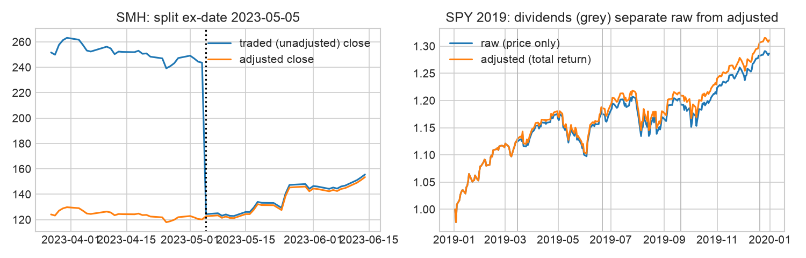
時間點正確性檢查（三個層次）
| Level | Check | Result |
|---|---|---|
| Values | Prices only; feature at t uses closes <= t (truncation test in 03) | PASS |
| Values | Non-price data (fundamentals, macro, text) | N/A (none used in v1) |
| Values | Adjusted prices are back-adjusted with future dividends; returns are invariant but levels are not -> levels never used in dollars | PASS (dollar quantities use raw prices) |
| Universe | Eligibility computed from history length and trailing 63d median $ADV at t | PASS |
| Universe | Leavers included (closed/merged ETFs) | FAIL - list chosen in 2025; 0 leavers in sample (survivorship bias) |
| Identifiers | Ticker changes / reuse handled with effective dates | PASS (no ticker changes among the 100 symbols in 2006-2023; tickers checked against listing dates) |
品質報告 OHLC 不變式違反、非正價格、重複 (symbol, date) 皆為 0；成交量為 0 的列有 158 列（0.038%，以 VLUE、INDA 為主），處理方式是標記並排除（價格設為 NaN，不能進入特徵、標籤或成交），不做任何默默往前補值。相對於 NYSE 交易日曆，各檔上市後內部缺漏交易日為 0。樣本內沒有任何一檔下市（存活者偏誤，見 PIT 表的 FAIL）。每月可交易檔數中位數 87（四分位 74–93），2006 年因歷史長度不足為 0，2015 年後穩定在 85 以上（圖 3.2）。v1 不使用 tick 資料；合成資料（3 檔、60 日）只用於回測引擎的單元驗證，不進入任何結果或總表。代號檢查涵蓋 2006–2023；2024–2025 為維持 holdout 封存而未在開發期檢查。
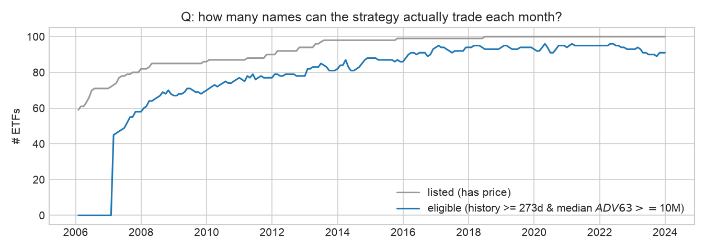
| item | value |
|---|---|
| label | fwd_open_ret_21d |
| type | fixed-horizon continuous return |
| execution anchor | fill at open t+1, exit at open t+22 |
| horizon | 21 sessions |
| mean |close-close - open-open| per obs (bp) | 85 |
| IC(mom_252_21) close-to-close label | 0.0582 |
| IC(mom_252_21) next-open label | 0.0569 |
| nominal obs (dev) | 352,620 |
| effective obs ~ nominal / horizon | 16,791 |
| effective IC days (Bartlett, discovery) | 86 |
標籤 fwd_open_ret_21d = open[t+22] / open[t+1] − 1，固定期間連續報酬，錨定「t+1 開盤成交、下次再平衡開盤出場」的回測規則。同一筆觀測下，收盤對收盤與開盤對開盤標籤的平均絕對差是 85bp，所以兩者不能混用。訓練目標為逐日橫斷面去均值後的報酬，並以訓練 fold 估計的 1%／99% 分位做 winsorize。重疊造成名目觀測 352,620 筆，有效樣本約 16,791（÷ 21）；discovery 期 IC 序列的 Bartlett 有效天數只有 86 天，所以所有 IC 信賴區間都用 Newey-West（lag 21）。
特徵表（Table 8.1 格式，每個候選一列） 22 個候選：17 個訊號（每個都有可命名的機制與預期方向）與 5 個狀態變數；回看期 ≤ 252 日，每日計算、月頻使用。
| feature | role | driver hypothesis | lookback | representation | known failure mode | sign |
|---|---|---|---|---|---|---|
| mom_252_21 | signal | Persistence: under-reaction / slow-moving capital (12-1 momentum) | 252 | return, XS rank | momentum crashes after volatility spikes | + |
| mom_126_21 | signal | Persistence at 6-1 months | 126 | return, XS rank | regime concentration in one asset class | + |
| mom_63 | signal | Persistence at 3 months (faster trend) | 63 | return, XS rank | whipsaw in range-bound markets | + |
| volscaled_mom_252_21 | signal | Persistence per unit risk (TS-momentum scaling) | 252 | return / vol, XS rank | low-vol bond ETFs dominate the ranking | + |
| sharpe_126 | signal | Trend earned with less dispersion repeats | 126 | mean/std of log returns, XS rank | unbounded when vol -> 0 | + |
| dist_52w_high | signal | Anchoring on the 52-week high delays reaction to news | 252 | close / 252d max - 1, XS rank | piles up at 0 in sustained bull runs | + |
| sma_ratio_200 | signal | Trend-following: price above its 200d average | 200 | close / SMA200 - 1, XS rank | lags turning points by months | + |
| trend_consistency_63 | signal | Frog-in-the-pan: gradual information diffuses slowly | 63 | share of up sessions, XS rank | noisy for low-vol funds | + |
| mom_accel | signal | Trend acceleration: recent leg vs older leg | 126 | mom_63 - (mom_126_21 - mom_63), XS rank | flags reversals as acceleration | + |
| rev_21 | signal | Short-term reversal: liquidity provision to 1-month flow pressure | 21 | return, XS rank | ETF reversal weaker than single stocks | − |
| rev_5 | signal | Weekly reversal: liquidity provision | 5 | return, XS rank | dominated by noise at monthly horizon | − |
| vol_63 | signal | Low-risk anomaly: leverage-constrained investors overpay for risk | 63 | annualised std, XS rank | mixes asset classes with structurally different vol | − |
| beta_spy_126 | signal | Betting-against-beta: funding constraints | 126 | OLS beta to SPY, XS rank | beta unstable across regimes | − |
| max_ret_21 | signal | Lottery demand: investors overpay for extreme upside | 21 | max daily return, XS rank | driven by single events | − |
| skew_63 | signal | Skewness preference: positively skewed assets overpriced | 63 | sample skewness, XS rank | estimation noise in 63 obs | − |
| amihud_63 | signal | Illiquidity premium: compensation for price impact | 63 | mean |r| / $volume, XS rank | ETF liquidity != underlying liquidity | + |
| volume_trend_21_126 | signal | Attention: rising participation confirms the move | 126 | log(ADV21/ADV126), XS rank | index events and rebalancing days | + |
| asset_rvol_pct | state | Own volatility vs own history: stress state of the asset | 252 | percentile of vol_21 in own 252d | single shock dominates | (state) |
| mkt_rvol_pct | state | Market risk environment (SPY 21d vol vs expanding history) | 252 | expanding percentile | level shifts in vol regime | (state) |
| mkt_trend | state | Market trend state (SPY vs SMA200) | 200 | ratio | late at turning points | (state) |
| corr_spy_tlt_63 | state | Hedge regime: stock-bond correlation | 63 | level | nonsynchronous trading, one pair stands for all | (state) |
| xs_disp_21 | state | Opportunity set: cross-sectional dispersion of 1-month returns | 21 | XS std | dominated by commodity outliers | (state) |
所有訊號在每個決策日對當日符合資格的標的做橫斷面百分位排名。相關性分群（|ρ| ≥ 0.8，依特徵表順序挑代表，不看 IC）刪去 2 個重複：volscaled_mom_252_21（＝mom_252_21）、max_ret_21（＝vol_63）。
關卡 1a：截斷測試 隨機抽 6 個日期，把資料截在 t 重新計算所有特徵，在 t 的值與全樣本計算完全相同，所以沒有未來資訊。之後的獨立稽核又用 12 個月底日期，對完整 panel（含排名與市場層級狀態變數）重做一次，同樣全部通過。
五道關卡篩選（discovery 2008-01 ～ 2014-11，結果 0 PROCEED／9 REVISE／8 STOP）
關卡 1–2、5：關聯與多重檢定
| feature | sign | IC | lo | hi | ICIR | same-sign yrs | IC 5d | IC 21d | IC 63d | p (NW) | BH | effect d |
|---|---|---|---|---|---|---|---|---|---|---|---|---|
| mom_252_21 | + | 0.057 | -0.011 | 0.125 | 0.144 | 0.714 | 0.044 | 0.057 | 0.021 | 0.102 | – | 0.484 |
| mom_126_21 | + | 0.026 | -0.037 | 0.089 | 0.07 | 0.714 | 0.031 | 0.026 | -0.02 | 0.418 | – | 0.221 |
| mom_63 | + | 0.059 | 0.005 | 0.113 | 0.172 | 0.857 | 0.029 | 0.059 | 0.039 | 0.033 | – | 0.502 |
| volscaled_mom_252_21 | + | 0.047 | -0.011 | 0.105 | 0.142 | 0.714 | 0.03 | 0.047 | 0.029 | 0.113 | – | 0.401 |
| sharpe_126 | + | 0.021 | -0.034 | 0.076 | 0.065 | 0.714 | 0.018 | 0.021 | -0.003 | 0.457 | – | 0.178 |
| dist_52w_high | + | 0.012 | -0.05 | 0.074 | 0.033 | 0.429 | 0.009 | 0.012 | -0 | 0.706 | – | 0.102 |
| sma_ratio_200 | + | 0.043 | -0.017 | 0.103 | 0.119 | 0.714 | 0.024 | 0.043 | 0.021 | 0.16 | – | 0.368 |
| trend_consistency_63 | + | 0.055 | 0.012 | 0.097 | 0.211 | 0.857 | 0.032 | 0.055 | 0.04 | 0.011 | – | 0.466 |
| mom_accel | + | 0.032 | -0.025 | 0.089 | 0.092 | 0.857 | 0.001 | 0.032 | 0.039 | 0.27 | – | 0.272 |
| rev_21 | − | 0.023 | -0.025 | 0.071 | 0.07 | 0.286 | 0.007 | 0.023 | 0.039 | 0.344 | – | 0.198 |
| rev_5 | − | 0 | -0.032 | 0.032 | 0.001 | 0.429 | -0.006 | 0 | 0.012 | 0.99 | – | 0.002 |
| vol_63 | − | 0.05 | -0.02 | 0.12 | 0.122 | 0.286 | 0.028 | 0.05 | 0.072 | 0.159 | – | 0.428 |
| beta_spy_126 | − | 0.102 | 0.023 | 0.181 | 0.22 | 0.286 | 0.052 | 0.102 | 0.15 | 0.011 | – | 0.868 |
| max_ret_21 | − | 0.056 | -0.008 | 0.121 | 0.147 | 0.286 | 0.034 | 0.056 | 0.069 | 0.086 | – | 0.48 |
| skew_63 | − | -0.024 | -0.063 | 0.015 | -0.104 | 0.571 | -0.018 | -0.024 | -0.028 | 0.224 | – | -0.205 |
| amihud_63 | + | 0.026 | 0.005 | 0.048 | 0.208 | 0.857 | 0.015 | 0.026 | 0.044 | 0.015 | – | 0.225 |
| volume_trend_21_126 | + | -0.001 | -0.034 | 0.031 | -0.007 | 0.429 | 0.004 | -0.001 | -0.038 | 0.936 | – | -0.011 |
關卡 1、3–4：安慰劑、形狀與可行性，以及決策
| feature | placebo IC (lag 21) | quintile mono. | Q5−Q1 bp/mo | top-quintile turnover/mo | cost bp/mo | decision | reason |
|---|---|---|---|---|---|---|---|
| mom_252_21 | 0.045 | 1 | 42 | 0.231 | 4 | REVISE | slow state proxy (placebo survives); CI includes 0 / not BH-significant |
| mom_126_21 | 0.001 | 0.7 | 42 | 0.34 | 6 | REVISE | non-monotone quintiles; CI includes 0 / not BH-significant |
| mom_63 | 0.034 | 0.8 | 78 | 0.434 | 8 | REVISE | slow state proxy (placebo survives); non-monotone quintiles; CI includes 0 / not BH-significant |
| volscaled_mom_252_21 | 0.036 | 0.4 | 51 | 0.222 | 4 | STOP | duplicate of mom_252_21 (|rho|>=0.8) |
| sharpe_126 | 0.008 | 0.7 | 28 | 0.312 | 6 | REVISE | non-monotone quintiles; CI includes 0 / not BH-significant |
| dist_52w_high | 0.011 | 0.9 | 39 | 0.416 | 8 | STOP | slow state proxy (placebo survives); non-monotone quintiles; CI includes 0 / not BH-significant |
| sma_ratio_200 | 0.04 | 0.9 | 55 | 0.308 | 6 | REVISE | slow state proxy (placebo survives); non-monotone quintiles; CI includes 0 / not BH-significant |
| trend_consistency_63 | 0.043 | 0.9 | 65 | 0.433 | 8 | REVISE | slow state proxy (placebo survives); non-monotone quintiles; CI includes 0 / not BH-significant |
| mom_accel | 0.039 | 0.9 | 61 | 0.563 | 10 | REVISE | slow state proxy (placebo survives); non-monotone quintiles; CI includes 0 / not BH-significant |
| rev_21 | 0.018 | -0.6 | -51 | 0.743 | 14 | STOP | sign opposite to mechanism; no stable support |
| rev_5 | 0.03 | 1 | 83 | 0.746 | 14 | STOP | sign opposite to mechanism; no stable support |
| vol_63 | 0.052 | -0.3 | -12 | 0.084 | 2 | STOP | sign opposite to mechanism; no stable support |
| beta_spy_126 | 0.101 | -1 | -81 | 0.051 | 1 | STOP | sign opposite to mechanism; no stable support |
| max_ret_21 | 0.05 | -0.6 | -20 | 0.215 | 4 | STOP | duplicate of vol_63 (|rho|>=0.8) |
| skew_63 | -0.024 | 0.7 | 28 | 0.465 | 9 | REVISE | slow state proxy (placebo survives); non-monotone quintiles; CI includes 0 / not BH-significant |
| amihud_63 | 0.026 | 0.5 | 37 | 0.121 | 2 | REVISE | slow state proxy (placebo survives); non-monotone quintiles; CI includes 0 / not BH-significant |
| volume_trend_21_126 | -0.03 | 0.3 | 18 | 0.553 | 10 | STOP | sign opposite to mechanism; no stable support |
讀法：IC 為日 Spearman IC 平均與 NW 95% CI，ICIR 為日 IC 平均 / 標準差；same-sign yrs 為 7 個年度區塊中方向符合機制的比例；IC 5d / 21d / 63d 為三個期間的 IC 衰減；effect d 為以平均橫斷面樣本數換算的效果量（與 BH 一起報告）；placebo 為特徵延後 21 日的 IC（若仍存活代表是「慢速狀態代理」而非即時資訊）；單調性為五分位平均標籤的 Spearman（≥ 0.9 視為單調，0.9 的列實際值略低於 0.9）；價差與成本皆為每月 bp、以預期方向計算（成本 = 前五分位換手 × 2 倍來回成本）。Benjamini–Hochberg（α = 0.05，17 個訊號）沒有任何特徵顯著，這是沒有 PROCEED 的主因。
值得記下的 STOP beta_spy_126 的 IC = 0.102 [0.023, 0.181] 是全表最大、NW 區間不含 0（名目 p = 0.011，BH 校正後不顯著），但方向與「betting-against-beta」機制相反；看了資料才把方向反過來，就等於一個新假說，所以在 v1 一律 STOP，並列為下一版的候選。短期反轉（rev_21、rev_5）在 ETF 上也不成立。
狀態變數與機制檢驗（證偽條件 ④，discovery） 以擴張式、時間點正確的三分位門檻，計算 12-1 動能 IC 在 SPY 波動三分位下的表現：低 0.091、中 −0.030、高 0.084。高波動並沒有比較差，在 discovery 期間，機制的「波動開關」部分未獲支持（但高波動只有 151 天，CI 很寬）。在驗證期這個結果反轉了（第 5、6 節）。
前三名特徵的機制合理性（DAG + 四項檢查） 圖 4.1 為 trend_consistency_63、amihud_63、mom_63 的 DAG：控制市場 beta／資產類別與波動狀態（干擾因子）；資金流是中介變數（不控制）；基金規模與存活是碰撞變數（絕不控制，否則會造成偽相關）。
| feature | ic | placebo_lag5 | placebo_lag21 | ic_after_beta_group_control | ic_calm | ic_mid | ic_stressed | event_time |
|---|---|---|---|---|---|---|---|---|
| trend_consistency_63 | 0.055 | 0.054 | 0.043 | 0.025 | 0.053 | 0.069 | 0.044 | N/A (not event-based) |
| amihud_63 | 0.026 | 0.026 | 0.026 | 0.03 | 0.012 | 0.07 | -0.005 | N/A (not event-based) |
| mom_63 | 0.059 | 0.058 | 0.034 | 0.009 | 0.073 | 0.049 | 0.007 | N/A (not event-based) |
mom_63 在控制 beta 與資產類別後，IC 從 0.059 掉到 0.009，代表它多半是在挑「哪一類資產」而不是挑個別 ETF；amihud_63 在控制後仍存活，但在高波動時消失。三者都不是事件型特徵，事件時間對齊不適用。
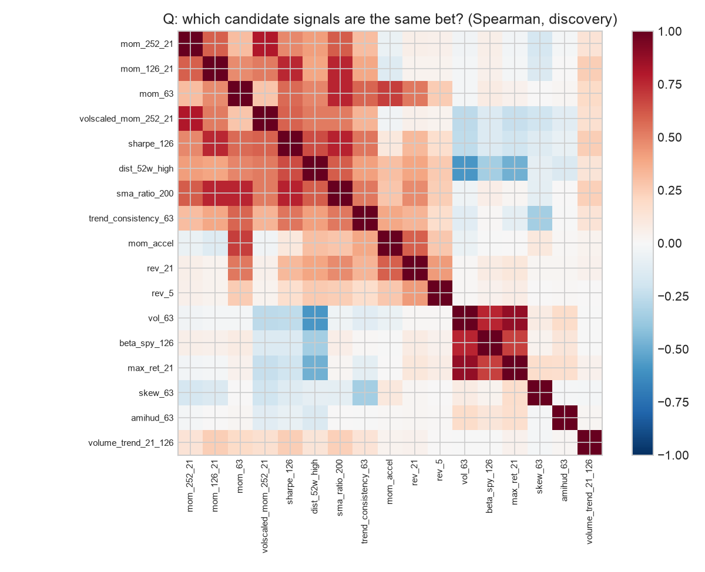
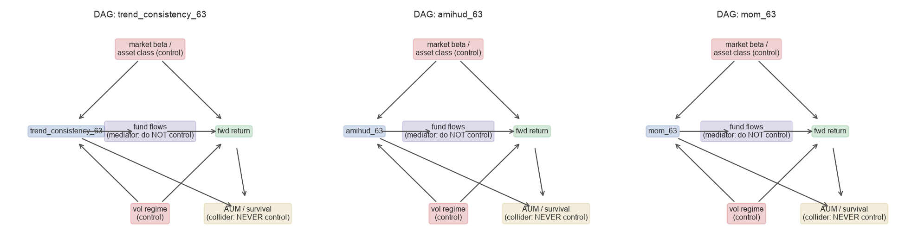
基準階梯 ① 規則：依 mom_252_21 排名（不擬合）；② Ridge：9 個 REVISE 訊號＋各自與市場波動狀態的交互作用，標準化只在訓練 fold 上 fit；α 在 10⁻⁴～10⁵（10 個值、9 個數量級）中依 2014 年 IC 選出 10⁵（網格邊界；與課本圖 11.1「ICIR 高峰出現在很大的 α」一致）；③ LightGBM：MAE（L1）損失、淺樹，Optuna TPE 50 次試驗，在 2014 年提早停止後凍結（num_leaves 12、max_depth 3、學習率 0.0116、min_child_samples 562、295 輪）；⑤ 集成：前三者逐日 z 分數平均。訓練列每 5 個交易日取 1 天，以降低標籤重疊。
驗證期（2015–2023，9 fold）的共同尺度：日 Spearman IC 與 NW 95% CI
| IC | CI_lo | CI_hi | p | ICIR(daily) | share_pos_folds | n_eff_days | days | |
|---|---|---|---|---|---|---|---|---|
| rule | 0.019 | -0.029 | 0.066 | 0.439 | 0.058 | 0.667 | 128 | 2,242 |
| ridge | 0.045 | 0.005 | 0.085 | 0.026 | 0.159 | 0.778 | 142 | 2,242 |
| lgbm | 0.078 | 0.042 | 0.113 | 0 | 0.3 | 0.778 | 147 | 2,242 |
| ensemble | 0.06 | 0.02 | 0.101 | 0.004 | 0.21 | 0.667 | 137 | 2,242 |
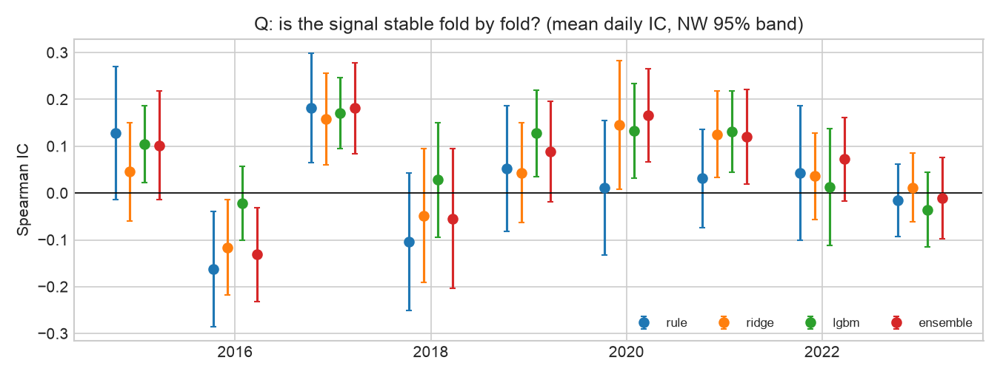
集成的離散度 各 fold 日 IC 的標準差：規則 0.106、Ridge 0.090、LightGBM 0.082、集成 0.106。集成沒有降低離散度（反而高於 LightGBM），所以不採用集成的理由不只是成對檢定，也包括它沒有帶來穩定性。
成對比較（日 IC 差，NW 95% CI）與部署決策
| comparison | dIC | lo | hi | p |
|---|---|---|---|---|
| ridge - rule | 0.026 | -0.02 | 0.072 | 0.265 |
| lgbm - ridge | 0.033 | 0.003 | 0.063 | 0.033 |
| lgbm - rule | 0.059 | 0.011 | 0.107 | 0.016 |
| ensemble - rule | 0.042 | 0.008 | 0.075 | 0.014 |
| ensemble - ridge | 0.015 | -0.005 | 0.036 | 0.146 |
| ensemble - lgbm | -0.017 | -0.042 | 0.007 | 0.171 |
依事先登錄的規則（部署最複雜、且相對「最佳較簡單階」成對差 CI 下界 > 0 的那一階）：集成 vs LightGBM 下界 −0.042，不成立；LightGBM vs Ridge 下界 +0.0026 → 部署 LightGBM。這個邊際很薄，而且必須說明：稽核前的程式誤把比較對象寫成「最後一個通過的階」（規則），稽核後才改成合約文字的「最佳較簡單階」。同時修正了調參窗口的 purge，LightGBM 重新調參後，下界才從 −0.0015 變成 +0.0026（附錄 A3）。
SHAP（描述性，非因果） 前幾大是 mkt_rvol_pct、mom_252_21、sharpe_126。方向檢查：mom_252_21、mom_63、sma_ratio_200 的 SHAP 與特徵值正相關（符合延續機制，9 個 fold 中分別有 9／9／8 個方向一致）。出乎意料的歸因：sharpe_126 的 SHAP 與特徵值負相關（−0.61，9 個 fold 全部一致），和「風險調整後動能」的機制相反。我的解讀是：在已經有原始動能的情況下，高 Sharpe 往往代表低波動的債券型 ETF，模型其實是在用它降低債券權重，換句話說是資產類別效果，而不是動能本身。mkt_rvol_pct 是每天所有標的都相同的值，它的 SHAP 大多只是整天的水準移動，對橫斷面排名沒有影響，只有透過交互作用才有用。各 fold 重要性排名的平均 Spearman 為 0.53，屬於中度穩定。大小合理性：最大平均 |SHAP| 約 0.0010（相當於 21 日去均值報酬約 10bp），對照篩選表中每月 40–80bp 的五分位價差，對月頻橫斷面訊號而言是合理的量級。
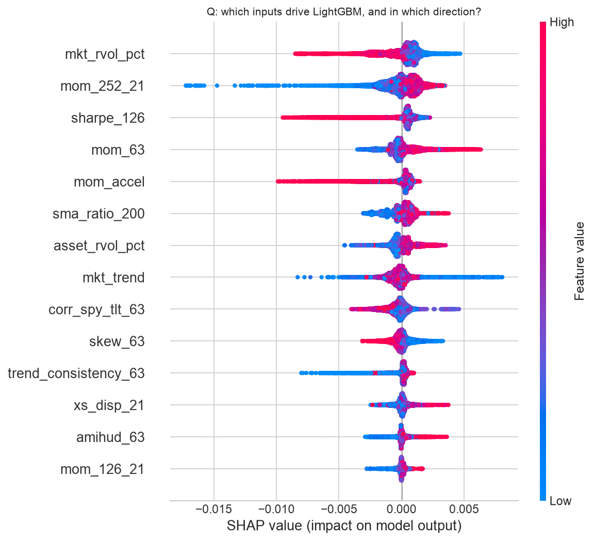
Conformal 預測區間 以每個 fold 訓練窗的最後 252 日為校準集（與核心訓練集之間再 purge 22 日）。80% 區間的實際覆蓋率在 2015（0.75）、2018（0.72）、2020（0.63）、2022（0.71）低於 80%，90% 區間在 2020 年只有 0.76。這四年都是波動突增的年份，和「校準過時」的預期一致。Ridge 與 LightGBM 的覆蓋率幾乎相同。
| fold | coverage 80% | coverage 90% | flag < 80% |
|---|---|---|---|
| 2015 | 0.753 | 0.863 | FLAG |
| 2016 | 0.804 | 0.893 | |
| 2017 | 0.881 | 0.953 | |
| 2018 | 0.718 | 0.855 | FLAG |
| 2019 | 0.811 | 0.915 | |
| 2020 | 0.634 | 0.758 | FLAG |
| 2021 | 0.876 | 0.949 | |
| 2022 | 0.706 | 0.822 | FLAG |
| 2023 | 0.893 | 0.952 |
協定（事前固定，Table 16.2 的六項）
| Component | Specification |
|---|---|
| Signal timing | t 收盤產生分數 → t+1 開盤成交（延遲 1 交易日）；同根 K 棒成交視為 lookahead |
| Rebalance & holding | 月頻；持有至下次再平衡開盤（≈ 21 交易日 = 標籤期間） |
| Position sizing | 前 10 名等權、單檔上限 10%（配置比較：前 20 名、上限 10%） |
| Fill assumptions | 以開盤價全額成交（ADV ≥ $10M，部位遠小於成交量，不模擬部分成交）；該日無有效價格則不交易、保留原權重 |
| Constraints | 只做多、滿倉、槓桿 ≤ 1，於模擬迴圈內每次再平衡檢查；缺價保留舊權重時其他標的同比例縮減 |
| Costs | 每股 $0.0035 + 分級半價差，以未調整開盤價換算；掃描 0–8 倍；壓力測試價差 × 3 |
引擎：自寫的逐日事件迴圈（權重每日漂移）。不用純向量化，是因為波動目標覆蓋與無法成交規則會影響下一步動作。引擎另以合成資料（3 檔、60 天、已知價格）做單元測試，確認報酬與成本計算和手算一致。
驗證期績效（2015-01 ～ 2023-12，相同協定，扣成本）
| strategy | gross_sharpe | net_sharpe | net_sr_lo | net_sr_hi | net_cagr | vol | max_dd | turnover_2way_ann |
|---|---|---|---|---|---|---|---|---|
| deployed_lgbm | 0.678 | 0.634 | -0.02 | 1.289 | 0.097 | 0.169 | -0.299 | 16.674 |
| rule_mom_252_21 | 0.478 | 0.461 | -0.194 | 1.115 | 0.071 | 0.189 | -0.295 | 7.168 |
| ridge | 0.515 | 0.48 | -0.175 | 1.134 | 0.076 | 0.192 | -0.408 | 12.367 |
| ensemble | 0.644 | 0.609 | -0.046 | 1.263 | 0.098 | 0.18 | -0.328 | 12.75 |
| EW_all_eligible | 0.547 | 0.544 | -0.11 | 1.199 | 0.068 | 0.138 | -0.301 | 0.561 |
| 60/40 SPY/AGG | 0.764 | 0.764 | 0.109 | 1.418 | 0.078 | 0.106 | -0.221 | 0.313 |
| SPY | 0.733 | 0.733 | 0.079 | 1.387 | 0.118 | 0.172 | -0.32 | 0.111 |
部署模型勝過非 ML 規則（0.46）與全體等權（0.54），但輸給 60/40（0.76）與 SPY（0.73）。課本的 ETF 基準（Sharpe 0.65 vs 60/40 的 0.80）也有同樣不討好的結果。
成本敏感度 假設成本中位數每腿 3.4bp。損益兩平成本 c* = 年化毛報酬 ÷ 年化雙邊換手：部署模型 69bp/腿（相對等權基準 24bp），規則 126bp/腿，屬於「舒適區」。成本放大到 4 倍時淨 Sharpe 仍有 0.50，8 倍時 0.33。換手偏高：年化雙邊 16.7 倍，平均持有約 1.4 個月；規則只有 7.2 倍。
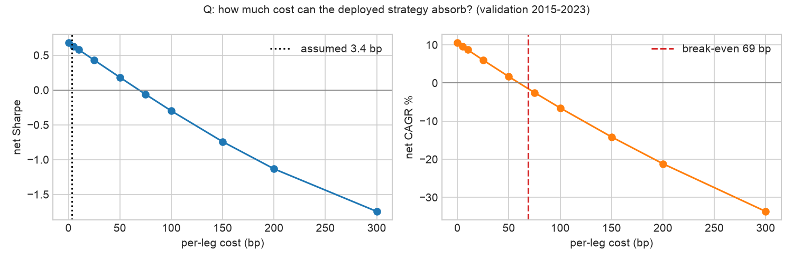
投組配置（相同訊號、相同 63 日共變異窗） 前 10 名搭配 10% 上限時，任何滿倉配置都會退化成等權，因此改用前 20 名候選集做對照比較：
| allocator | net_sharpe | max_dd | turnover_2way_ann | HHI | effective_bets |
|---|---|---|---|---|---|
| equal_weight (top-20) | 0.577 | -0.342 | 13.038 | 0.05 | 20 |
| inverse_vol (top-20) | 0.612 | -0.333 | 13.699 | 0.055 | 18.333 |
| hrp (top-20) | 0.599 | -0.343 | 15.459 | 0.064 | 15.681 |
| best-worst spread | 0.035 |
最佳與最差的差距只有 0.035 Sharpe，比不同訊號之間的差距小一個數量級，與課本中位數 0.49「配置救不了弱訊號」的結論一致；這裡沒有使用 mean-variance，所以不需要 Ledoit-Wolf。
風險控制矩陣（Table 19.2 精簡版）
| 風險 | 代理指標 | 控制 | 頻率 |
|---|---|---|---|
| 市場 | 對 SPY 的滾動 252 日 beta（平均 0.90，HAC 區間 0.81–0.99；最低 0.75 於 2019-11，最高 1.15 於 2018-01） | 波動目標覆蓋；停損階梯 | 每日監看、每月行動 |
| 因子 / 集中 | 資產類別權重、HHI、有效標的數 | 單檔 ≤ 10%；前 10 名 | 每次再平衡 |
| 槓桿 | 總曝險 | ≤ 1.0，在模擬內檢查 | 每次再平衡 |
| 流動性 | 63 日美元成交量中位數 | 資格門檻 ≥ $10M；成交日缺價不交易 | 每月 |
| 模型 | 滾動 63 日 IC、PSI、conformal 覆蓋率 | 重訓 / 暫停規則（第 8 節） | 每月 |
| 作業 | 資料快照雜湊、holdout 存取紀錄、規格雜湊 | 程式閘門與 git | 每次執行 |
| VaR95 | CVaR95 | days | |
|---|---|---|---|
| all | 0.016 | 0.025 | 2,263 |
| high vol | 0.02 | 0.031 | 1,051 |
| low vol | 0.012 | 0.019 | 1,212 |
尾端與路徑風險 每日歷史 VaR95 為 1.62%，CVaR95 為 2.55%；高波動狀態下分別是 2.03% 與 3.08%，低波動狀態下 1.20% 與 1.90%。最大回撤 −29.9%：2020-02-14 到 2020-03-23 共 26 個交易日，114 個交易日後（2020-09-02）才回到前高。
壓力測試（價差 × 3，只放大價差、不放大手續費）
| episode | strategy | return | max_dd |
|---|---|---|---|
| covid_2020 | deployed (3x spreads) | -0.153 | -0.299 |
| covid_2020 | deployed + overlay (3x spreads) | -0.148 | -0.204 |
| covid_2020 | rule (3x spreads) | -0.098 | -0.295 |
| covid_2020 | 60/40 | -0.061 | -0.214 |
| covid_2020 | SPY | -0.128 | -0.321 |
| rate_shock_2022 | deployed (3x spreads) | -0.099 | -0.186 |
| rate_shock_2022 | deployed + overlay (3x spreads) | -0.057 | -0.102 |
| rate_shock_2022 | rule (3x spreads) | 0.097 | -0.197 |
| rate_shock_2022 | 60/40 | -0.165 | -0.219 |
| rate_shock_2022 | SPY | -0.178 | -0.263 |
COVID 期間部署模型（−15.3%）比規則（−9.8%）和 60/40（−6.1%）更差。2022 年升息衝擊時是 −9.9%，比 60/40 的 −16.5% 好，但規則反而 +9.7%（12-1 動能及早轉進能源與美元）。
波動目標覆蓋（10%，只用 t−1 資訊；有／無覆蓋並列） 加上覆蓋後淨 Sharpe 由 0.63 降到 0.54，最大回撤由 −29.9% 縮小到 −20.5%，平均曝險 0.73。覆蓋只是降低風險，並沒有創造報酬；它也不是讓策略轉正的原因（「overlays refine, never redeem」）。
停損階梯（Table 19.7 格式）
| 回撤門檻 | 行動 | 負責人 |
|---|---|---|
| 5% | watch：檢查 parity 與資料 | 研究者 |
| 10% | halve gross：曝險減半 | 研究者 |
| 15% | halt new trades：停止新交易 | 風險審核者 / 指導老師核可 |
| 20% | unwind：全部平倉 | 風險審核者 / 指導老師核可 |
驗證期依「回撤事件」計算各觸發 8／5／5／1 次（圖 7.6），20% 只在 2020 年 3 月觸發。v1 的停損階梯是事後計數，沒有在模擬中執行（只有波動目標覆蓋有模擬），所以不能說「加了停損會更好」。
統計推論（驗證期） 淨 Sharpe 0.63，95% CI [−0.02, 1.29]；PSR(SR>0) = 0.97；偏態 −0.82、峰態 12.2。依帳本 N = 93 次試驗計算的 DSR = 0.28（零技能下預期最大 Sharpe 0.84）；若只計 8 個策略層級配置，DSR = 0.67。最短紀錄長度依課本公式為 15 年，依 Bailey–López de Prado 公式為 7.0 年。
Holdout 只執行一次：2026-11-08 23:39（results/holdout_access.log：touch #1，spec 7e75995d042147ae）。執行前用開發期資料（2022–2023 代替 holdout）做過完整的試跑，確認程式不會中途當掉、需要第二次觸碰。
| Stage | Metric | Validation 2015-2023 | Holdout 2024-2025 | Benchmark |
|---|---|---|---|---|
| Signal | Daily IC [NW 95% CI] | 0.078 [0.042, 0.113] | 0.064 [-0.014, 0.142] | - |
| Signal | ICIR (daily) / share of positive folds | 0.300 / 0.78 | 0.249 / 1.00 | - |
| Portfolio | Gross Sharpe [95% CI] | 0.68 [0.02, 1.33] | 1.11 [-0.29, 2.50] | val: EW 0.55 · 60/40 0.76 · SPY 0.73; holdout: EW 1.31 · 60/40 1.39 · SPY 1.27 |
| Portfolio | Max drawdown / 2-way turnover p.a. | -29.9% / 16.7x | -19.9% / 14.3x | val: EW -30.1%/0.56x · 60/40 -22.1%/0.31x · SPY -32.0%/0.11x; holdout: EW -13.1%/0.96x · 60/40 -11.7%/0.64x · SPY -19.8%/0.50x |
| Costs | Net Sharpe [95% CI] at assumed cost | 0.63 [-0.02, 1.29] | 1.08 [-0.31, 2.47] | val: EW 0.54 · 60/40 0.76 · SPY 0.73; holdout: EW 1.31 · 60/40 1.39 · SPY 1.27 |
| Costs | Break-even cost (bp per leg) | 69 | 128 | - |
| Risk overlay | Net Sharpe / MDD with 10% vol target | 0.54 / -20.5% | 1.09 / -13.1% | - |
| Inference | Skew / kurtosis of daily net returns | -0.82 / 12.2 | -0.80 / 13.0 | - |
| Inference | Deflated Sharpe (trials = N) / min. track record | 0.28 (N=93) / 15 y | 0.17 (N=93) / 5 y | - |
結果型態（Ch. 20 五型） never resolved：驗證期與 holdout 的淨 Sharpe 區間都跨 0（[−0.02, 1.29] 與 [−0.31, 2.47]）；IC 方向維持（驗證期 CI 不含 0，holdout 含 0）。預先登錄的確認檢定通過：holdout 平均 IC 0.064 > 0、淨 Sharpe 1.08 > 0。但 IC 的 95% CI [−0.014, 0.142] 與 Sharpe 的 CI [−0.31, 2.47] 都含 0；兩年日資料的 Sharpe 標準誤約 ±0.7，1.08 和 0 在統計上幾乎無法區分。
Holdout 各階的訊號與投組結果（同一凍結規格）
| mean | lo | hi | p | icir_daily | share_pos_folds | T | |
|---|---|---|---|---|---|---|---|
| rule | 0.049 | -0.035 | 0.133 | 0.252 | 0.182 | 1 | 480 |
| ridge | 0.076 | -0.007 | 0.159 | 0.073 | 0.282 | 1 | 480 |
| lgbm | 0.064 | -0.014 | 0.142 | 0.109 | 0.249 | 1 | 480 |
| ensemble | 0.073 | -0.015 | 0.162 | 0.105 | 0.257 | 1 | 480 |
| strategy | gross_sharpe | net_sharpe | net_sr_lo | net_sr_hi | net_cagr | vol | max_dd | turnover_2way_ann |
|---|---|---|---|---|---|---|---|---|
| deployed_lgbm | 1.105 | 1.077 | -0.315 | 2.468 | 0.179 | 0.166 | -0.199 | 14.274 |
| rule_mom_252_21 | 1.359 | 1.345 | -0.048 | 2.738 | 0.25 | 0.178 | -0.17 | 5.938 |
| ridge | 1.395 | 1.357 | -0.036 | 2.749 | 0.246 | 0.173 | -0.187 | 15.408 |
| ensemble | 1.137 | 1.116 | -0.275 | 2.508 | 0.21 | 0.187 | -0.213 | 11.901 |
| deployed + vol target | 1.124 | 1.094 | -0.298 | 2.486 | 0.136 | 0.123 | -0.131 | 11.233 |
| EW_all_eligible | 1.314 | 1.31 | -0.082 | 2.703 | 0.16 | 0.119 | -0.131 | 0.961 |
| 60/40 SPY/AGG | 1.388 | 1.388 | -0.005 | 2.78 | 0.15 | 0.105 | -0.117 | 0.641 |
| SPY | 1.271 | 1.271 | -0.121 | 2.663 | 0.223 | 0.169 | -0.198 | 0.503 |
各階段在 holdout 的比較 訊號端，LightGBM 的 IC（0.064）仍高於規則（0.049），Ridge 最高（0.076）。投組端卻相反：淨 Sharpe 規則 1.35、Ridge 1.36、等權 1.31、60/40 1.39、SPY 1.27，部署模型 1.08 墊底。毛 Sharpe 1.11 對淨 1.08，成本並不是原因。
診斷 (1) 價值在哪一關流失：不是訊號關（IC 方向維持）、不是成本關（兩平 128bp），而是 portfolio gate：IC 穩定、Sharpe 下降，這是 Ch. 20 定義的 portfolio-translation drift。2024–2025 是全面多頭（等權 Sharpe 1.31），在 beta 主導的市場中，換手 14 倍、前 10 名集中的排名轉換，把小幅的 IC 優勢吃掉了。(2) 市場狀態：holdout 只有 42 天屬於「高波動 / 下跌趨勢」，沒有「低波動 / 下跌」，等於沒有真正的空頭可以檢驗波動開關。(3) 機制：證偽條件 ④ 在驗證期沒有被觸發：動能 IC 平靜 0.095 [0.022, 0.169]、中 0.032、壓力 −0.075 [−0.160, 0.011]，支持波動開關；但在 discovery 期被否定。兩段資料互相矛盾，所以只能說「未定」。(4) 限制因素：construction robustness（排名→權重的轉換不夠穩健）。(5) ML 優勢本身不穩健：重新下載資料重跑開發期會改選 12-1 規則（第 5 節）；holdout 中 Ridge 的 IC（0.076）也高於 LightGBM。驗證期各狀態的最差回撤：高波動 / 下跌 −20.4%、高波動 / 上漲 −19.0%、低波動 / 上漲 −16.9%。
唯一的下一步 把部署模型的分數先做 3 個月指數平滑再取前 10 名，把換手壓到與規則同級（≈ 6–7 倍/年），然後用同一個 walk-forward 協定重測 portfolio gate。 這屬於映射規則的改變，是 setup v2，需要新的 holdout（例如 2026 年起的前推資料）。不再調模型參數。依課本結論，這個第一輪策略不直接投入資金。
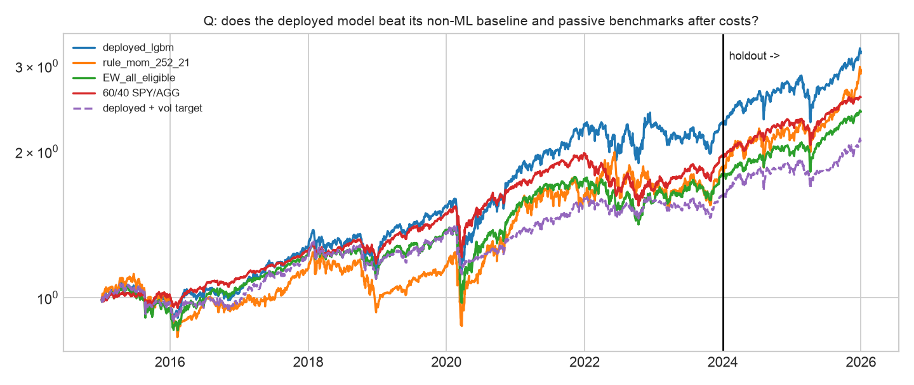
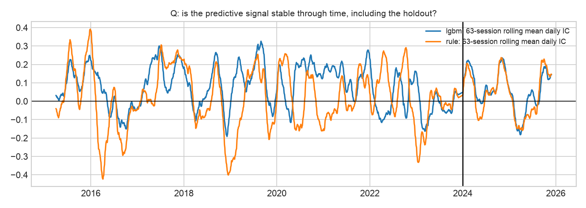
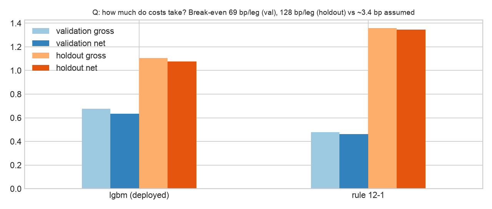
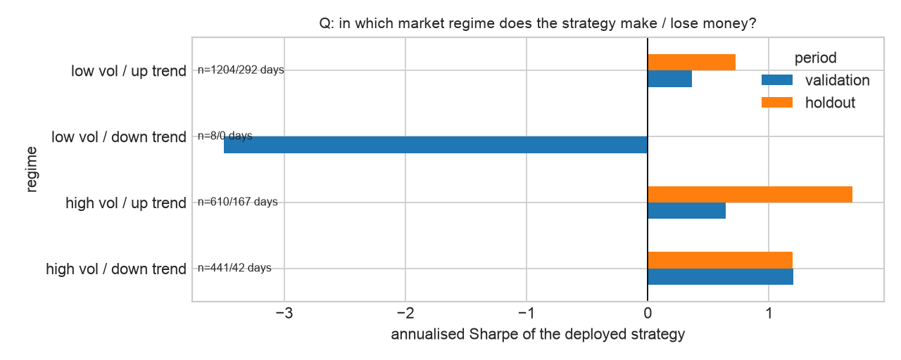
圖 7.5（SHAP beeswarm）即圖 5.2。
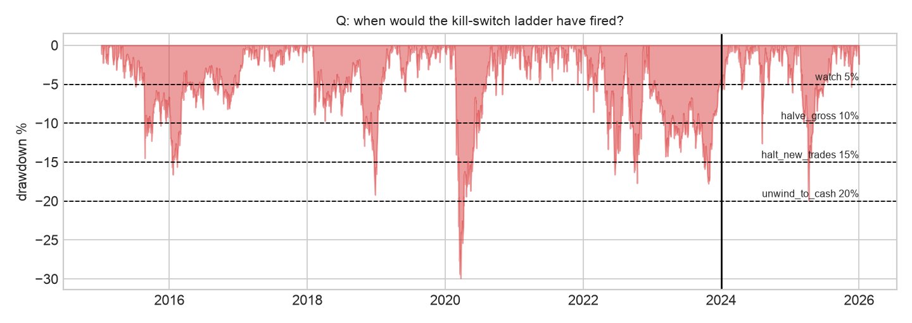
一致性（parity） 實盤與回測共用同一個 etfmom 套件：資料 → 特徵 → 預測 → 訊號 → 委託，每一層存快照並計算雜湊，逐層比對回測與實盤（原始價格、特徵值、預測排名、目標權重、成交價差）。監控：每月計算 30／60／90 日滾動 Sharpe、回撤、命中率、IC，以及實盤 / 回測的實現比率（< 0.5 連續 3 個月就調查）。漂移：前 5 大特徵的 PSI（0.10–0.25 觀察，> 0.25 重訓），加上 SHAP 排名檢查（前 5 名有 2 個以上換掉即調查）；conformal 覆蓋率 < 80% 代表校準過時。生命週期：每年初例行重訓；60 日 IC < 0 而且 PSI > 0.25 → 暫停；連續 12 個月 IC 的 NW CI 上界 < 0、或回撤 ≥ 20% → 退場；正式投入資金前至少 6 個月影子交易（shadow mode）。區分三種失效：技術 bug（parity 某一層出現斷點 → 修程式，不重訓）、統計衰退（IC 與 PSI 同時惡化 → 重訓或退場）、成本膨脹（毛 Sharpe 穩定、淨 Sharpe 下滑或實際價差 > 假設 2 倍 → 降低再平衡頻率）。
run_log.csv，共 196 列 run）| Trial family | 試驗數 | 內容 | 評估窗 |
|---|---|---|---|
| feature_triage | 21（+ 去重紀錄 1） | 17 訊號五道關卡、4 狀態三分位 | discovery 2008-01 ～ 2014-11 |
| ridge_alpha | 10 | α = 10⁻⁴ … 10⁵ | 2014 調參窗 |
| lgbm_optuna | 50 | TPE、提早停止 | 2014 調參窗 |
| model_ladder | 4（+ 部署決策 1） | rule / ridge / lgbm / ensemble | 驗證 2015–2023 |
| strategy_backtest、allocator、risk_overlay | 8 | 4 策略、3 配置、1 覆蓋 | 驗證 2015–2023 |
| holdout | 1 | 確認檢定（PASS） | 2024–2025，唯一一次 |
試驗次數依 (family, trial) 去重計算，決策與去重紀錄列不計入（N = 93）。帳本 1–103 列是稽核前的第一次執行（含一次只改報表的重跑），104–195 列是稽核修正後的重跑，196 列是 holdout 確認檢定；同一個試驗名稱不重複計數，但兩次的結果都保留在帳本中。
| name | train_start | train_end | valid_start | valid_end |
|---|---|---|---|---|
| 2015 | 2007-01-01 | 2014-11-28 | 2015-01-02 | 2015-12-31 |
| 2016 | 2007-01-01 | 2015-11-30 | 2016-01-04 | 2016-12-30 |
| 2017 | 2007-01-01 | 2016-11-29 | 2017-01-03 | 2017-12-29 |
| 2018 | 2007-01-01 | 2017-11-28 | 2018-01-02 | 2018-12-31 |
| 2019 | 2007-01-01 | 2018-11-27 | 2019-01-02 | 2019-12-31 |
| 2020 | 2007-01-01 | 2019-11-27 | 2020-01-02 | 2020-12-31 |
| 2021 | 2007-01-01 | 2020-11-30 | 2021-01-04 | 2021-12-31 |
| 2022 | 2007-01-01 | 2021-11-30 | 2022-01-03 | 2022-12-30 |
| 2023 | 2007-01-01 | 2022-11-29 | 2023-01-03 | 2023-12-29 |
Holdout fold：2024 年模型 train_end 2023-11-28；2025 年模型 train_end 2024-11-27（依同一協定以 2024 年資料重訓，屬於凍結規格的一部分）。 run_log.csv 的 eval_window 欄只記錄整段區間；各 fold 的切分日期以本表（results/tables/04_fold_dates.csv）為準。gate 欄只在有關卡的試驗家族（特徵篩選、部署決策、holdout）填寫。
已確認並修正的問題：(1) discovery 與調參窗的末端沒有 purge，2014 年最後 22 日的標籤讀到 2015 年開盤 → 改成窗口截在 2014-11-28；(2) 部署規則的實作與合約文字不一致 → 改用「最佳較簡單階」；(3) 帳本的 git commit 欄位沒有把未追蹤的新檔案算成 dirty。低嚴重度的修正包括：波動覆蓋改成不使用成交當天的開盤價、狀態標籤延遲由 t−1 改為 t−2、壓力測試只放大價差、刪除尾端多出來的零報酬日、缺價時確保總曝險 ≤ 1、試驗數排除紀錄列、新增 Bailey–López de Prado 的 MinTRL。修正後 03–05 全部重跑。修正前後部署模型都是 LightGBM，但成對檢定的結論是在修正後才成立，已在第 5 節揭露。沒有發現特徵、標籤、purge 或回測引擎有前視偏誤。
交件前另做一次最終檢查：依評分表逐條對照、把文中數字與結果表逐一核對，並從乾淨的 git clone 依 README 重跑一次。核對出的文字與數字錯誤已修正；重跑發現的資料雜訊敏感度已寫入第 5、7 節。
setup.yaml 交易設定 v1（合約） run_log.csv 研究帳本
src/etfmom/ data / features / models / backtest / metrics / ledger
scripts/download_data.py 重建資料集 scripts/run_notebooks.py 執行 01–05（06、07 需明示）
scripts/freeze_spec.py 凍結規格（holdout 閘門需要） scripts/build_report.py 產生本 PDF
notebooks/01_setup … 07_results（.py 為原始碼，.ipynb 為執行結果）
results/tables, results/figures, results/holdout_access.log
時間軸聲明 所有階段都在 2026-11-08 同一個工作階段內完成（commit 73fd93f → 交件，23:17 起），並非橫跨六週。能證明「協定先於結果」的是 commit 的順序：setup.yaml 與空帳本（73fd93f）先於資料（e1582a7），資料先於任何回測（0f477e4），凍結規格（b983dbb）先於唯一一次 holdout 觸碰（8cd248b）；git 歷史未改寫。
重現 (a) 重現 holdout 與總表：uv sync → uv run python scripts/download_data.py → HOLDOUT_RERUN=1 uv run python scripts/run_notebooks.py 06 07（使用已 commit 的凍結規格；以新下載的資料，最終審查實測 holdout 淨 Sharpe 1.10，原值 1.08）。(b) 重跑開發期 01–05：會覆寫 results/artifacts/*.json，使凍結規格的雜湊檢查拒絕執行 06（git checkout results/ 可還原），而且如第 5 節所述，部署模型可能改變；每次重跑也會在帳本新增列。數字差異的其他來源：LightGBM 多執行緒（已設 deterministic、seed 42）。